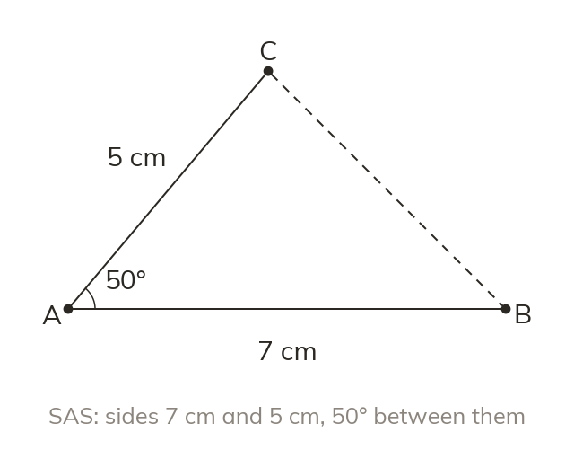

What fixes a triangle
SSS, SAS and ASA each fix one triangle. Every accurate construction from those facts gives the same triangle.
Three sides (SSS), two sides and the angle between them (SAS), or two angles and the side between them (ASA) fix one triangle. Every accurate construction from those facts gives the same triangle.